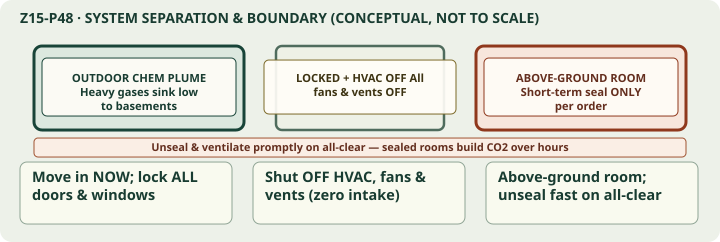

Z15-P48 · Disaster scenarios · New manuscript
Shelter-in-place properly for chemical or hazardous-materials airborne plumes
Keep acute toxic rail, highway, or industrial chemical vapors outside living air during short-duration official Shelter-in-Place orders.
When it applies · Train derailments, highway tanker spills, anhydrous-ammonia releases, or chemical plant incidents where officials issue an indoor Shelter-in-Place order.
Equipment · Interior windowless/minimal-window room, HVAC/fan shutoff access, pre-cut plastic sheeting + duct tape (ONLY when officially directed), and NOAA/local radio.

Actions
- Move EVERY person and pet indoors IMMEDIATELY on a hazmat Shelter-in-Place alert, close and lock ALL exterior doors and windows, and SHUT OFF ALL HVAC SYSTEMS, FURNACES, AIR CONDITIONERS, BATHROOM/KITCHEN EXHAUST FANS, AND FIREPLACE DAMPERS so mechanical fans do NOT suck outside chemical vapors indoors.[D15, E24]
- Move to an interior room (preferably ABOVE ground level, because many heavy industrial gases like chlorine or anhydrous ammonia sink into basements and low spots!), and seal door/window/vent gaps temporarily with plastic sheeting and duct tape ONLY when local authorities specifically instruct sealing.[D15, E24]
- Monitor official emergency broadcasts continuously and UNSEAL AND VENTILATE PROMPTLY the moment officials announce the all-clear—short-term sealed rooms build up carbon dioxide over hours and are strictly temporary (typically a few hours, NOT multi-day living!).[D15, E24]
Failure recognition · Leaving central air conditioning or bathroom exhaust fans running during a nearby rail-tanker ammonia leak, pulling toxic vapors straight through wall leaks.[D15]
Verify · Confirm all exterior doors/windows locked, all HVAC/exhaust fans switched OFF, occupants gathered in an above-ground interior room, and live official radio monitored.[D15]
Stop or change course · Strong chemical odor, burning eyes/throat inside a sealed room, or an official upgrade to Evacuation requires immediate action per fire/hazmat responders and 911.[D15, M15]
Evidence and editorial notes
- D15 · FEMA / Ready.gov · Hazardous Materials Incidents (current web edition)
- Section: Shelter-in-Place for Chemical, Hazmat, or Airborne Releases · Conditions: Hazardous-material rail/highway spills, industrial plumes, or official Shelter-in-Place orders
Support: Move indoors immediately, close and lock exterior doors and windows, shut off HVAC/ventilation fans that draw outdoor air, move to an interior room, seal gaps temporarily with plastic sheeting and duct tape ONLY when officially directed, and exit promptly when officials issue the all-clear to avoid CO2 buildup.
Limitations: Improvised room sealing is short-duration (typically hours, not days) and cannot substitute for evacuation if authorities order departure. · Conflicting evidence: None; distinguishes hazmat sealing from wildfire clean-room filtration.
Editorial note: Core hazmat shelter-in-place and ventilation-shutoff boundary. · Specialist reviewer: Hazmat response and emergency management
Primary source · checked 2026-11-24 - E24 · FEMA / Ready.gov · Shelter (current web edition)
- Section: Shelter > Sheltering in Place and Emergency Shelter · Conditions: Hazardous weather, outdoor smoke, or chemical/utility emergencies
Support: Choose shelter type to match the specific hazard: lowest interior room for wind/tornado, sealed interior room for outdoor hazardous-material alerts, or high ground for flood.
Limitations: Sealing a room for short-term chemical alerts requires following official duration orders to avoid CO/air-quality hazards. · Conflicting evidence: None; links household and outdoor shelter decision logic.
Editorial note: Bridges Z02 shelter selection with emergency-management hazard classes. · Specialist reviewer: Emergency management and shelter safety
Primary source · checked 2026-11-24 - M15 · NIH / MedlinePlus · Poisoning (current web edition)
- Section: Suspected Poisoning, Ingestion, and Toxic Exposure · Conditions: Accidental ingestion, inhalation, or skin/eye contact with toxic plants, chemicals, or medications
Support: Call 911 immediately if the person is unresponsive, seizing, or struggling to breathe; otherwise contact Poison Control (1-800-222-1222 in the U.S.) with exact substance details and do not induce vomiting unless directed.
Limitations: Improvised emetics or charcoal can worsen caustic or hydrocarbon injury. · Conflicting evidence: None; aligns with Poison Control guidance.
Editorial note: Separates 911 life-threat activation from Poison Control guidance. · Specialist reviewer: Medical toxicology and poison control
Primary source · checked 2026-11-24
Source lineage · FEMA Ready.gov Hazardous Materials Incidents; new manuscript · Classification · New manuscript.